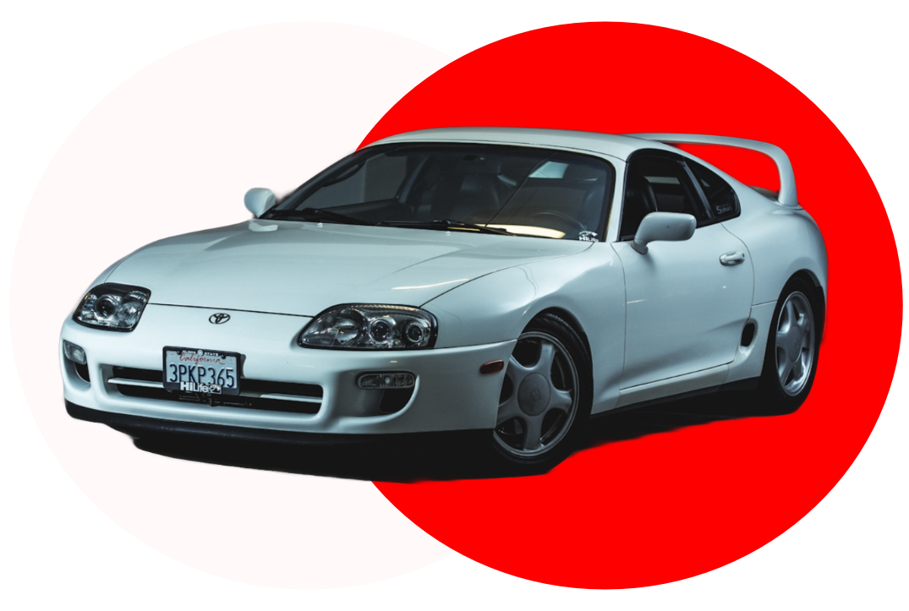

S U P R A
The Toyota Supra (Japanese: トヨタ・スープラ) is a sports car and grand tourer manufactured and developed by the Toyota Motor Corporation beginning in 1978. The name "Supra" is taken from the Latin prefix meaning "above", "to surpass" or "go beyond".

The Toyota Supra MK4 (chassis code JZA80) is the fourth-generation Supra sports car manufactured from 1993 to 2002, representing the pinnacle of 1990s Japanese engineering. It achieved legendary status through its twin-turbocharged 2JZ-GTE engine, timeless design, and exceptional tuning potential, with approximately 11,000 units produced across all markets.